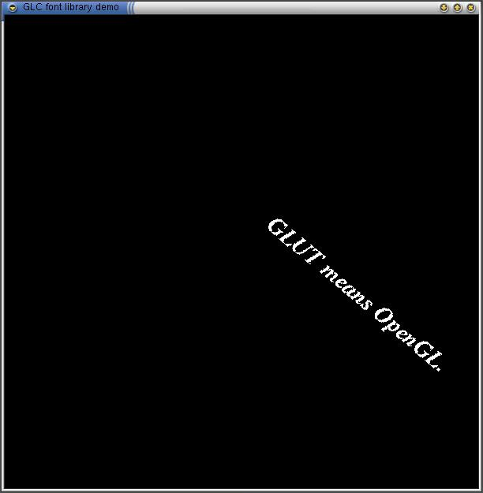

The Mesa-GLC library is an attempt to re-implement SGI's GLC library on a platform other than Irix. The GLC library is the GL character renderer, "a state machine that provides OpenGL programs with character rendering services via an application programming interface (API)." It has several advantages over platform-specific interfaces such as GLX or WGL. For more information, please see the GLC specification at http://toolbox.sgi.com/TasteOfDT/documents/OpenGL/glc/glcspec.html.
This library is released under the GNU LGPL. For more information, please see the file LICENSE, or visit the GNU web page at www.gnu.org.
The following options are not supported (section numbers are for the above document):
You may download the library from this URL:
mesa-glc-0.3.tar.gz
mesa-glc-0.1.tar.gz
And, finally, a screenshot. This is a slightly modified version of Mark
Kilgard's GLC demo. The text is in Times Bold Italic, and the text is
spinning around the origin.
